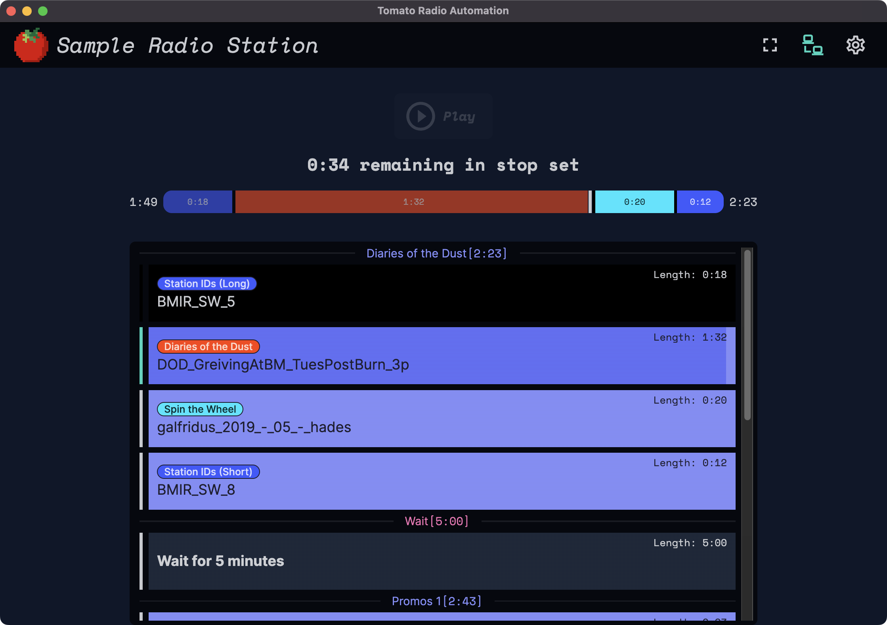
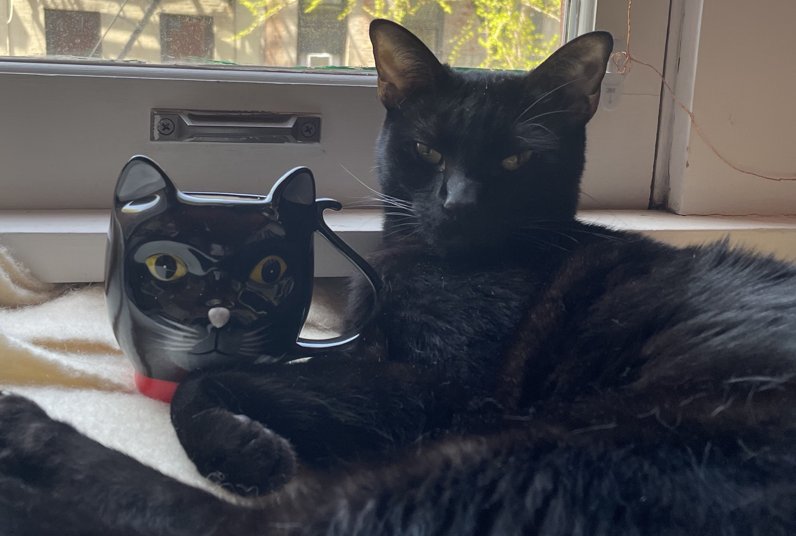

Welcome to Tomato←
Welcome to Tomato Radio Automation!
Tomato is easy to use, and hard to screw up playout software written for the specific use case of Burning Man Information Radio.
A Word of Caution
Currently, Tomato is under active development.
This documentation may not reflect the latest changes, or may include changes that are not yet available. Beware!

Quickstart←
You'll probably want to either read about the desktop app and backend server.
Use Case←
The use case of Tomato is extremely simple by design.
flowchart RL
subgraph CLIENT_SERVER["Server"]
direction BT
admin("Admins manage data")
server("Backend Server<br><em><small>(Web UI)</small></em>")
admin -- "Admin uploads audio, etc" --> server
end
subgraph STOPSET["Desktop (Native App)"]
direction TB
stopset("App Plays Stop Set<br><em><small>(Commercial Break)</small></em>")
wait("App Waits<br><em><small>(Countdown Timer)</small></em>")
stopset --> wait
wait -- User manually<br>triggers stop set --> stopset
end
CLIENT_SERVER -- app syncs<br>with server <---> STOPSETFeatures←
- Client and server relationship.
- Client
- Supports periods of intermittent connectivity and runs offline. It syncs with the server when it can.
- Can be used in "demo mode," for end-users to try out the software without needing to set up a server or connect to a production environment.
- Server accepts a wide range of audio formats and normalizes them to mp3.
- ...and more!
Non-Features (What Tomato is Not)←
Tomato is not full automation software, it only automates the playing of short audio files grouped together, ie used for advertisements on the radio.
Tomato does not support the playing of any kinds of music between ad breaks, instead relying on a live DJ to do that.
Why The Name?←
Simply said, this software was named after my cat, Tomato... or more affectionately nicknamed Kitty, Tomatillo, The "Shink", Catly, Catniss Evercat, Mr. Annoying, and Kitty Poopoo. His breed: domestic street urchin.

What's Next?←
First, familiarize yourself with some core concepts, then read about how to use the desktop app and backend server.